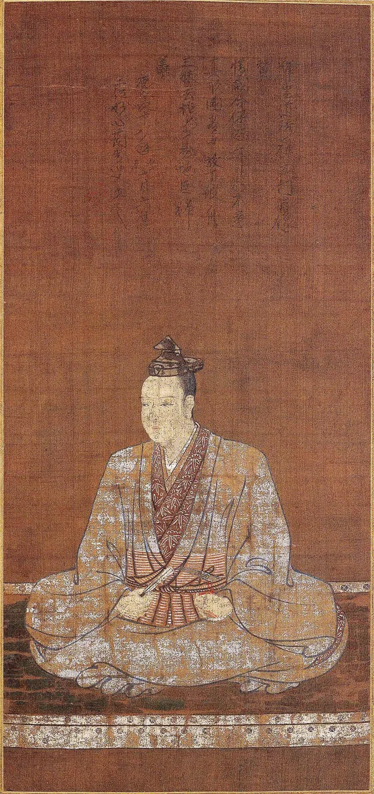

明智光秀戦国編 其の十二
前半生がほとんど分からない男が、主君を討ちます。
生涯の要点
- 生まれた年ははっきりしません
- 越前の朝倉家のもとにいたともいわれます
- 足利義昭と織田信長のあいだを取りもちました
- 1571年、近江の坂本（今の滋賀県大津市）に城を築きました
- 1579年ごろまでに丹波（今の京都府中部と兵庫県東部）を平定しました
- 1582年6月、京の本能寺で主君の信長を討ちました（本能寺の変）
- なぜ討ったのかは、今も諸説あります
- 11日後、山崎の戦いで羽柴秀吉に敗れました
- 逃げる途中で命を落としたとされます
よくある疑問
なぜ本能寺で信長を討ったの？
今も諸説あり、はっきりしていません。
本能寺のあとは？
11日後、山崎の戦いで羽柴秀吉に敗れ、逃げる途中で命を落としたとされます。

明智光秀像（本徳寺所蔵）
60秒で見る
60秒の動画は
11月27日 20時に公開します
11月27日 20時に公開します
出典と画像
参考：コトバンク「明智光秀」「本能寺の変」（日本大百科全書・改訂新版 世界大百科事典・デジタル版 日本人名大辞典+Plus）
肖像：明智光秀像（本徳寺所蔵）／Wikimedia Commons／パブリックドメイン
写真：坂本城跡の石垣 撮影 ブレイズマン／Wikimedia Commons／パブリックドメイン
動画のナレーション：VOICEVOX:青山龍星